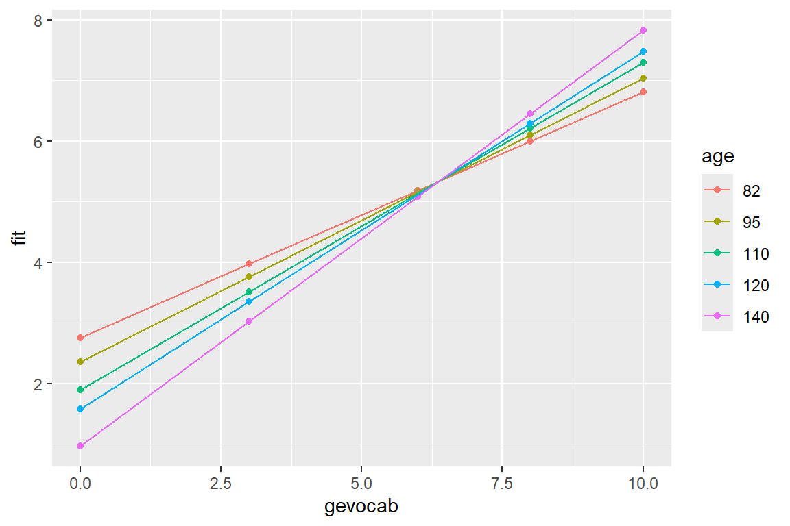
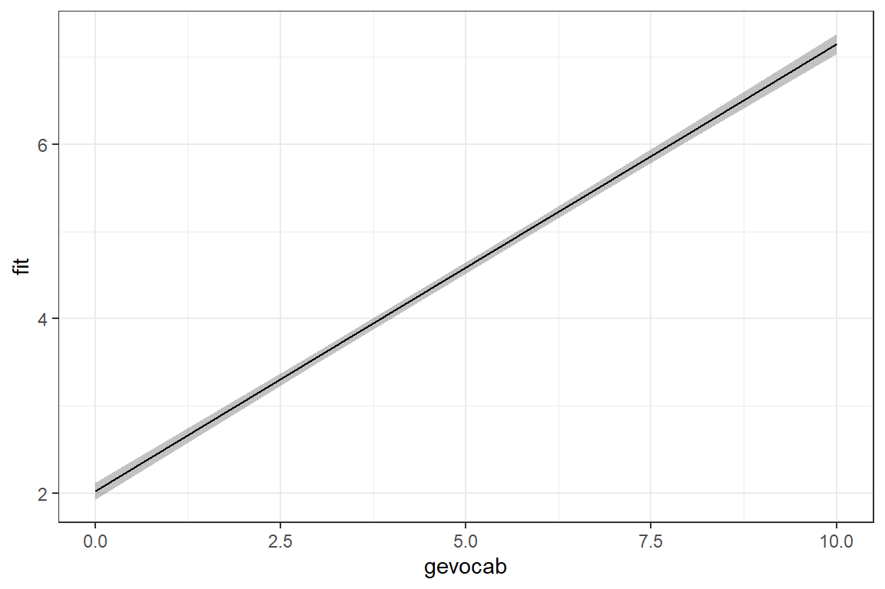
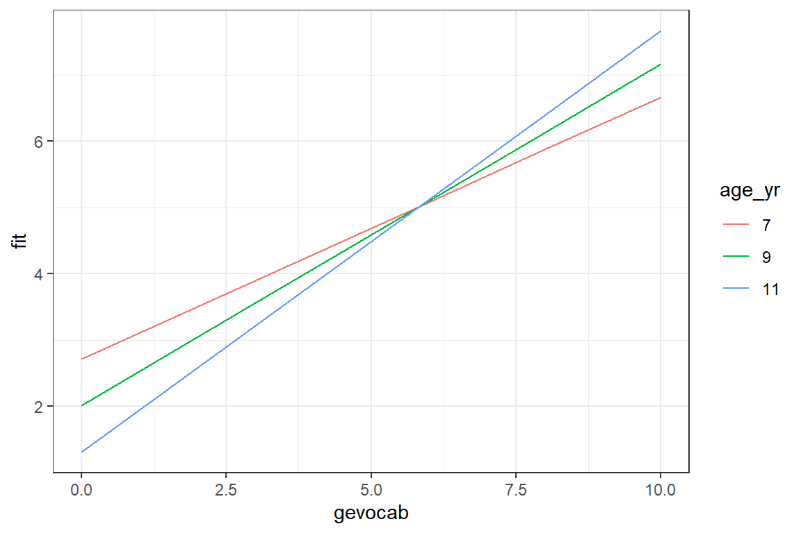
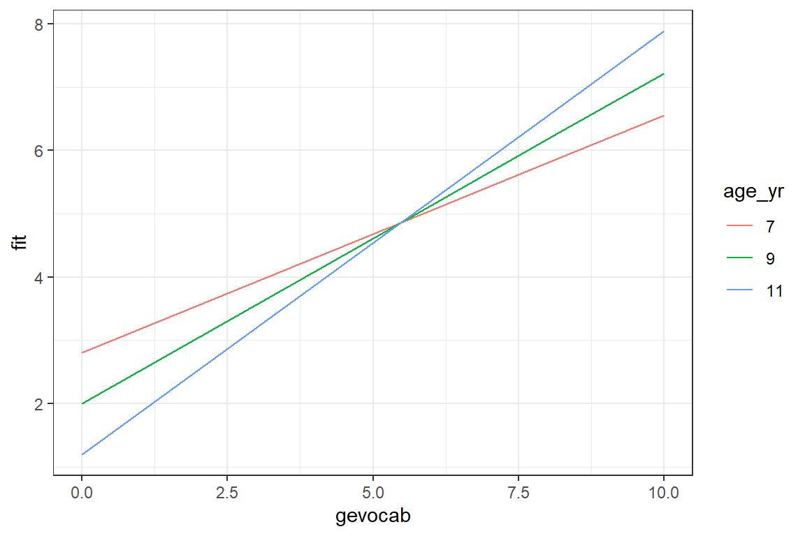
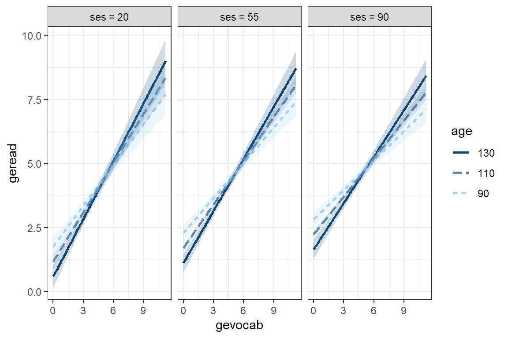

7 MLM, Centering/Scaling: Reading Achievement (2-levels only)
library(tidyverse) # all things tidy
library(haven) # read in SPSS dataset
library(psych) # contains some useful functions, like headTail
library(performance) # ICC and R2 calculations
library(effects) # Effects for regression models
library(optimx) # Different optimizers to solve mlm's
library(lme4) # non-linear mixed-effects models
library(lmerTest) 7.1 Background
The following example was included in the text “Multilevel Modeling in R” by Finch, Bolin, and Kelley (2016).
The datasets for this textbook may be downloaded from the website: http://www.mlminr.com/data-sets/.
I was unable to find any documentation on this dataset in the book or online, so I contacted the authors. There were unable to provide much either, but based on visual inspection designated the class of factor to thoes vairables that seem to represent categorical quantities. The labels for gender and class size are relative to the frequencies in the journal article the authors did point me to (although the samples sizes do not match up).
FOR THIS CHAPTER WE WILL IGNORE ALL LEVELS EXCEPT FOR STUDNETS BEING NESTED WITHIN SCHOOLS.
Read the SPSS data in with the haven package .
Declare all categorical variables to be factors and apply labels where meaningful.
Student-specific
*gender= Male or Female
*age= Age, in months
*gevocab= Vocabulary Score
*geread= Reading Score
Class-specific
*classsize= category of class’s size
School-specific
*senroll= school enrollment
*ses= school’s SES level
data_achieve <- data_raw %>%
dplyr::mutate_at(vars(id, region, corp, school, class), factor) %>%
dplyr::mutate(gender = gender %>%
factor(labels = c("Female", "Male"))) %>%
dplyr::mutate(classize = classize %>%
factor(labels = c("12-17", "18-21",
"22-26", ">26"))) %>%
dplyr::select(id, region, corp, school, class, # Identifiers
gender, age, geread, gevocab, # Pupil-level vars
classize, # Class-Level vars
senroll, ses) # School-level vars7.1.1 Sample Structure
It is obvious that the sample is hiarchical in nature. The nesting starts with students (level 1) nested within class (level 2), which are further nested within school (level 3), corp (level 4), and finally region (level 5).
For this chapter we will only focus on TWO levels: students (level 1) are the units on which the outcome is measured and schools (level 2) are the units in which they are nested.
The number of regions = 9:
[1] 9The number of corps = 60:
[1] 60The number of schools = 160
num_schools <- data_achieve %>%
dplyr::group_by(region, corp, school) %>%
dplyr::tally() %>%
nrow()
num_schools[1] 160The number of classes = 568
num_classes <- data_achieve %>%
dplyr::group_by(region, corp, school, class) %>%
dplyr::tally() %>%
nrow()
num_classes[1] 568The number of students = 10320
[1] 103207.2 Exploratory Data Analysis
7.2.1 Summarize Descriptive Statistics
data_achieve %>%
dplyr::select(classize, gender, geread, gevocab, age, ses, senroll) %>%
apaSupp::tab_desc(caption = "Summary of the numeric variables")NA | M | SD | min | Q1 | Mdn | Q3 | max | |
|---|---|---|---|---|---|---|---|---|
geread | 0 | 4.34 | 2.33 | 0.00 | 2.80 | 3.80 | 4.90 | 12.00 |
gevocab | 0 | 4.49 | 2.37 | 0.00 | 2.90 | 3.80 | 5.20 | 11.20 |
age | 0 | 107.53 | 5.06 | 82.00 | 104.00 | 107.00 | 111.00 | 135.00 |
ses | 0 | 72.85 | 21.98 | 0.00 | 66.30 | 81.70 | 87.80 | 100.00 |
senroll | 0 | 533.41 | 154.80 | 115.00 | 438.00 | 519.00 | 644.00 | 916.00 |
Note. N = 10320. NA = not available or missing; Mdn = median; Q1 = 25th percentile; Q3 = 75th percentile. | ||||||||
data_achieve %>%
dplyr::select(gender,
"Reading Score" = geread,
"Vocabulary Score" = gevocab,
"Age (in months)" = age,
"School SES" = ses,
"School's Enrollment" = senroll) %>%
apaSupp::tab1(split = "gender",
caption = "Summary by Gender")
| Total | Female | Male | p-value |
|---|---|---|---|---|
Reading Score | 4.34 (2.33) | 4.37 (2.35) | 4.31 (2.31) | .218 |
Vocabulary Score | 4.49 (2.37) | 4.58 (2.41) | 4.41 (2.32) | < .001*** |
Age (in months) | 107.53 (5.06) | 107.14 (4.95) | 107.92 (5.13) | < .001*** |
School SES | 72.85 (21.98) | 72.54 (22.30) | 73.16 (21.66) | .155 |
School's Enrollment | 533.41 (154.80) | 532.34 (154.52) | 534.48 (155.08) | .483 |
Note. Continuous variables are summarized with means (SD) and significant group differences assessed via independent t-tests. Categorical variables are summarized with counts (%) and significant group differences assessed via Chi-squared tests for independence. | ||||
* p < .05. ** p < .01. *** p < .001. | ||||
7.2.2 Visualization of Raw Data
7.2.2.1 Level One Plots: Disaggregate or ignore higher levels
For a first look, its useful to plot all the data points on a single scatterplot as displayed in the previous plot. Due to the large sample size, many points end up being plotted on top of or very near each other (overplotted). When this is the case, it can be useful to use geom_binhex() rather than geom_point() so the color saturation of the hexigons convey the number of points at that location, as seen in Figure \(\ref{fig:hexbin}\).
Note: I had to manually install the package hexbin for the geom_hex() to run.
data_achieve %>%
ggplot() +
aes(x = gevocab,
y = geread) +
stat_binhex(colour = "grey85", na.rm = TRUE) + # outlines
scale_fill_gradientn(colors = c("grey80","navyblue"), # fill color extremes
name = "Frequency", # legend title
na.value = NA) + # color for count = 0
theme_bw()
Figure 7.1
Raw Data: Density, Vocab vs. Reading
7.2.2.2 Multilevel plots: illustrate two nested levels
Up to this point, all investigation of this dataset has been only at the pupil level and any nesting or clustering within schools has been ignored. Plotting is a good was to start to get an idea of the school-to-school variability. This figure displays four handpicked school to illustrate the degreen of school-to-school variability in the association between vocab and reading scores.
data_achieve %>%
dplyr::filter(school %in% c(1321, 6181,
6197, 6823)) %>% # choose school numbers
ggplot(aes(x = gevocab,
y = geread))+
geom_count() + # creates points, size by overplotted number
geom_smooth(method = "lm") + # linear model (OLS)
facet_wrap(~ school) + # panels by school
theme_bw()
Figure 7.2
Raw Data: Independent Single-Level Regression within each school, a few illustrative cases
Another way to explore the school-to-school variability is to plot the linear model fit independently to each of the schools. This next figure displays only the smooth lines without the standard error bands or the raw data in the form of points or hexagons.
data_achieve %>%
ggplot(aes(x = gevocab,
y = geread)) +
geom_smooth(aes(group = school),
method = "lm",
se = FALSE, # do NOT want the SE bands
size = 0.3) +
geom_smooth(method = "lm",
se = FALSE,
color = "red", # do NOT want the SE bands
size = 2) + # make the lines thinner
theme_bw() 
Figure 7.3
Raw Data: Independent Single-Level Regression within each school, all schools shown together
Due to the high number of schools, the figure with all the school’s independent linear regression lines resembles a hairball and is hard to deduce much about individual schools. By using the facet_grid() layer, we can separate the schools out so better see school-to-school variability. It also allows investigation of higher level predictors, such as the school’s SES (median split with ntile(var, 2)) and class size.
data_achieve %>%
dplyr::mutate(ses2 = ntile(ses, 2) %>% # median split
factor(labels = c("SES: Lower Half",
"SES: Upper Half"))) %>%
dplyr::mutate(senroll = ntile(senroll, 3) %>%
factor(labels = c("Enroll: Smallest Third",
"Enroll: Middle Third",
"Enroll: Largest Third"))) %>%
ggplot(aes(x = gevocab,
y = geread,
group = school)) + # separates students into schools
geom_smooth(method = "lm",
se = FALSE,
size = 0.3,
color = "black",
alpha = .2) +
theme_bw() +
facet_grid(senroll ~ ses2) # makes separate panels (rows ~ columns)
Figure 7.4
Raw Data: Independent Single-Level Regression within each school, sepearated by school size and school SES
7.3 Single-Level Regression
7.3.1 Fit Nested Models
Ignoring the fact that students are nested or clustered within schools, is called dissagregating. This treats all students as independent units.
# linear model - ignores school (for reference only)
fit_read_lm_0 <- lm(formula = geread ~ 1, # intercept only
data = data_achieve)
fit_read_lm_1 <- lm(formula = geread ~ gevocab , # one predictor
data = data_achieve)
fit_read_lm_2 <- lm(formula = geread ~ gevocab + age, # two predictors
data = data_achieve)
fit_read_lm_3 <- lm(formula = geread ~ gevocab*age, # interation+main effects
data = data_achieve)Now compare the models:
apaSupp::tab_lms(list("Null" = fit_read_lm_0,
"1 IV" = fit_read_lm_1,
"2 IV" = fit_read_lm_2,
"Interaction" = fit_read_lm_3),
narrow = TRUE,
caption = "OLS: Investigate Fixed, Pupil-level Predictors")
| Null | 1 IV | 2 IV | Interaction | ||||
|---|---|---|---|---|---|---|---|---|
Variable | b | (SE) | b | (SE) | b | (SE) | b | (SE) |
(Intercept) | 4.34 | (0.02) *** | 1.96 | (0.04) *** | 3.19 | (0.42) *** | 5.28 | (0.87) *** |
gevocab | 0.53 | (0.01) *** | 0.53 | (0.01) *** | 0.01 | (0.19) | ||
age | -0.01 | (0.00) ** | -0.03 | (0.01) *** | ||||
gevocab * age | 0.00 | (0.00) ** | ||||||
AIC | 46765.77 | 43246.01 | 43239.28 | 43233.73 | ||||
BIC | 46780.25 | 43267.73 | 43268.24 | 43269.94 | ||||
R² | .000 | .289 | .290 | .290 | ||||
Adjusted R² | .000 | .289 | .290 | .290 | ||||
Note. | ||||||||
* p < .05. ** p < .01. *** p < .001. | ||||||||
Assess the significance of terms in the last ‘best’ model
Call:
lm(formula = geread ~ gevocab * age, data = data_achieve)
Residuals:
Min 1Q Median 3Q Max
-6.2069 -1.1250 -0.4362 0.6041 8.6476
Coefficients:
Estimate Std. Error t value Pr(>|t|)
(Intercept) 5.282607 0.869769 6.074 1.3e-09 ***
gevocab 0.009154 0.189113 0.048 0.961394
age -0.030814 0.008066 -3.820 0.000134 ***
gevocab:age 0.004830 0.001759 2.746 0.006039 **
---
Signif. codes: 0 '***' 0.001 '**' 0.01 '*' 0.05 '.' 0.1 ' ' 1
Residual standard error: 1.965 on 10316 degrees of freedom
Multiple R-squared: 0.2902, Adjusted R-squared: 0.29
F-statistic: 1406 on 3 and 10316 DF, p-value: < 2.2e-16# R2 for Linear Regression
R2: 0.290
adj. R2: 0.290Analysis of Variance Table
Response: geread
Df Sum Sq Mean Sq F value Pr(>F)
gevocab 1 16224 16223.9 4202.2783 < 2.2e-16 ***
age 1 34 33.7 8.7356 0.003128 **
gevocab:age 1 29 29.1 7.5419 0.006039 **
Residuals 10316 39827 3.9
---
Signif. codes: 0 '***' 0.001 '**' 0.01 '*' 0.05 '.' 0.1 ' ' 17.3.2 Visualize the Interaction
effects::Effect(focal.predictors = c("gevocab", "age"), # chooses default values for
mod = fit_read_lm_3) # continuous vars
gevocab*age effect
age
gevocab 82 95 110 120 140
0 2.755830 2.355243 1.893028 1.584884 0.9685969
3 3.971571 3.759370 3.514523 3.351291 3.0248284
6 5.187313 5.163497 5.136018 5.117699 5.0810599
8 5.997807 6.099582 6.217015 6.295304 6.4518809
10 6.808301 7.035667 7.298012 7.472909 7.8227019effects::Effect(focal.predictors = c("gevocab", "age"), # chooses default values for
mod = fit_read_lm_3) %>% # continuous vars
data.frame() %>%
mutate(age = factor(age)) %>% # must make a factor to separate lines
ggplot(aes(x = gevocab,
y = fit,
color = age)) +
geom_point() +
geom_line() 
Here is a better version of the plot.
Age is in months, so we want multiples of 12 for good visualization
Min. 1st Qu. Median Mean 3rd Qu. Max.
6.833 8.667 8.917 8.961 9.250 11.250 A good set set of illustrative ages could be: 7, 9, and 11:
[1] 84 108 132effects::Effect(focal.predictors = c("gevocab", "age"),
mod = fit_read_lm_3,
xlevels = list(age = c(84, 108, 132))) %>% # age is in months
data.frame() %>%
mutate(age_yr = factor(age/12)) %>% # it would be nice to plot age in years
ggplot(aes(x = gevocab,
y = fit,
color = age_yr,
linetype = age_yr)) +
geom_line(size = 1.25) +
theme_bw() +
labs(title = "Best Linear Model - Disaggregated Data (OLS)",
x = "Vocabulary Score",
y = "Reading Score",
linetype = "Age (yrs)",
color = "Age (yrs)") +
theme(legend.position = c(0.85, 0.2),
legend.key.width = unit(2, "cm"),
legend.background = element_rect(color = "black")) +
scale_linetype_manual(values = c("solid", "longdash", "dotted")) +
scale_x_continuous(breaks = seq(from = 0, to = 11, by = 2)) +
scale_y_continuous(breaks = seq(from = 0, to = 11, by = 1))
7.4 MLM - Step 1: Null Model, only fixed and random intercepts
A so called Empty Model only includes random intercepts. No independent variables are involved, other the grouping or clustering variable that designates how level 1 units are nested within level 2 units. For a cross-sectional study design this would be the grouping variables, where as for longitudinal or repeated measures designs this would be the subject identifier. This nested structure variable should be set to have class factor.
7.4.1 Fit the Model
fit_read_0ml <- lmerTest::lmer(geread ~ 1 + (1|school),
data = data_achieve,
REML = FALSE) # fit via ML (not the default)
fit_read_0re <- lmerTest::lmer(geread ~ 1 + (1|school) ,
data = data_achieve,
REML = TRUE) # fit = REML (the default)Compare the two models to OLS:
apaSupp::tab_lmers(list("MLM-ML" = fit_read_0ml,
"MLM-REML" = fit_read_0re),
caption = "MLM: NULL Model,two estimation methods")
| MLM-ML | MLM-REML | ||||
|---|---|---|---|---|---|---|
Variable | b | (SE) | p | b | (SE) | p |
(Intercept) | 4.31 | (0.05) | < .001*** | 4.31 | (0.05) | < .001*** |
school.var__(Intercept) | 0.39 | 0.39 | ||||
Residual.var__Observation | 5.05 | 5.05 | ||||
AIC | 46,270 | 46,274 | ||||
BIC | 46,292 | 46,296 | ||||
Log-likelihood | -23,132 | -23,134 | ||||
Note. | ||||||
* p < .05. ** p < .01. *** p < .001. | ||||||
Notice that the estimate for the intercept is nearly the same in the linear regression and intercept only models, but the standard errors are quite different. When there is clustering in sample, the result of ignoring it is under estimation of the standard errors and over stating the significance of associations. This table was made with the screenreg() function in the self named package. I tend to prefer this display over stargazer().
7.4.2 Estimate the ICC
First, ask for the variance compenents:
Groups Name Variance Std.Dev.
school (Intercept) 0.3915 0.6257
Residual 5.0450 2.2461 $var.fixed
[1] 0
$var.random
[1] 0.3915154
$var.residual
[1] 5.045008
$var.distribution
[1] 5.045008
$var.dispersion
[1] 0
$var.intercept
school
0.3915154 \[ \begin{align*} \text{schools} \rightarrow \; & \sigma^2_{u0} = 0.6257^2 = 0.392 \\ \text{students within schools} \rightarrow \; & \sigma^2_{e} = 2.2461^2 = 5.045 \\ \end{align*} \]
Intraclass Correlation (ICC) Formula \[ \overbrace{\rho}^{\text{ICC}} = \frac{\overbrace{\sigma^2_{u0}}^{\text{Random Intercept}\atop\text{Variance}}} {\underbrace{\sigma^2_{u0}+\sigma^2_{e}}_{\text{Total}\atop\text{Variance}}} \tag{Hox 2.9} \]
Then you can manually calculate the ICC.
[1] 0.07209858Or you can use the icc() function in the performance package.
# Intraclass Correlation Coefficient
Adjusted ICC: 0.072
Unadjusted ICC: 0.072Note: On page 45 (Finch, Bolin, and Kelley 2016), the authors substituted standard deviations into the formula, rather than variances. The mistake is listed on their webpage errata (http://www.mlminr.com/errata) and is repeated through the text.
7.5 MLM - Step 2: Add Lower-level explanatory variables, fixed, ML
Variance Component models (steps 2 and 3) - decompose the INTERCEPT variance into different variance compondents for each level. The regression intercepts are assumed to varry ACROSS the groups, while the slopes are assumed fixed (no random effects).
Fixed effects selection should come prior to random effects. You should use Maximum Likelihood (ML) estimation when fitting these models.
-
IF: only level 1 predictors and random intercepts are
incorporated
- Then: MLM \(\approx\) ANCOVA .
7.5.1 Add pupil’s vocab score as a fixed effects predictor
fit_read_1ml <- lmerTest::lmer(geread ~ gevocab + (1|school),
data = data_achieve,
REML = FALSE) # to compare fixed var sig
fit_read_1re <- lmerTest::lmer(geread ~ gevocab + (1|school),
data = data_achieve,
REML = TRUE) # for R-sq calcsapaSupp::tab_lmers(list("Null" = fit_read_0ml,
"w/Pred" = fit_read_1ml),
caption = "MLM: Investigate a Fixed Pupil-level Predictor")
| Null | w/Pred | ||||
|---|---|---|---|---|---|---|
Variable | b | (SE) | p | b | (SE) | p |
(Intercept) | 4.31 | (0.05) | < .001*** | 2.02 | (0.05) | < .001*** |
gevocab | 0.51 | (0.01) | < .001*** | |||
school.var__(Intercept) | 0.39 | 0.10 | ||||
Residual.var__Observation | 5.05 | 3.77 | ||||
AIC | 46,270 | 43,132 | ||||
BIC | 46,292 | 43,161 | ||||
Log-likelihood | -23,132 | -21,562 | ||||
Note. | ||||||
* p < .05. ** p < .01. *** p < .001. | ||||||
7.5.1.1 Assess Significance of Effects
Likelihood Ratio Test (LRT)
Since models 0 and 1 are nested models, only differing by the the inclusion or exclusion of the fixed effects predictor gevocab, AND both models were fit via Maximum Likelihood, we can compare the model fit may be compared via the Likilihood-Ratio Test (LRT). The Likelihood Ratio value (L. Ratio) is found by subtracting the two model’s -2 * logLik or deviance values. Significance is judged by the Chi Squared distribution, using the difference in the number of parameters fit as the degrees of freedom.
Data: data_achieve
Models:
fit_read_0ml: geread ~ 1 + (1 | school)
fit_read_1ml: geread ~ gevocab + (1 | school)
npar AIC BIC logLik -2*log(L) Chisq Df Pr(>Chisq)
fit_read_0ml 3 46270 46292 -23132 46264
fit_read_1ml 4 43132 43161 -21562 43124 3139.9 1 < 2.2e-16 ***
---
Signif. codes: 0 '***' 0.001 '**' 0.01 '*' 0.05 '.' 0.1 ' ' 1What does the model look like?
effects::Effect(focal.predictors = c("gevocab"),
mod = fit_read_1ml) %>%
data.frame() %>%
ggplot(aes(x = gevocab,
y = fit)) +
geom_ribbon(aes(ymin = lower,
ymax = upper),
alpha = .3) +
geom_line() +
theme_bw()
7.5.1.2 Proportion of Variance Explained
Extract the variance-covariance estimates:
BL = BAseline: The Null Model (fit via REML)
Groups Name Variance Std.Dev.
school (Intercept) 0.3915 0.6257
Residual 5.0450 2.2461 \[ \sigma^2_{u0-BL} = 0.392 \\ \sigma^2_{e-BL} = 5.045 \]
MC = Model to Compare: Model with Predictor (fit via REML)
Groups Name Variance Std.Dev.
school (Intercept) 0.09978 0.3159
Residual 3.76647 1.9407 \[ \sigma^2_{u0-MC} = 0.100 \\ \sigma^2_{e-MC} = 3.766 \]
Level 1 \(R^2\) - Snijders and Bosker
Found on page 47 (Finch, Bolin, and Kelley 2016), the proportion of variance in the outcome explained by predictor on level one is given by:
Snijders and Bosker Formula - Level 1 \[ R^2_1 = 1 - \frac{\sigma^2_{e-MC} + \sigma^2_{u0-MC}} {\sigma^2_{e-BL} + \sigma^2_{u0-BL}} \]
Note: This formula also apprears in the Finch errata. The subscripts in the denominator of the fraction should be for model 0, not model 1. The formula is given correctly here. They did substitute in the correct values.
Calculate the value by hand:
[1] 0.2889461Or use the performance package to help out: (Note it is using a difference method…)
# R2 for Mixed Models
Conditional R2: 0.295
Marginal R2: 0.276This means nearly 30% of the variance in reading scores, above and beyond that accounted for by school membership (i.e. school makeup or school-to-school variation), is attributable to vocabulary scores.
Level 1 \(R^2\) - Raudenbush and Bryk
Hox, Moerbeek, and Van de Schoot (2017) presents this formula on page 58 of chapter 2
Raudenbush and Bryk Approximate Formula - Level 1 \[ approx\; R^2_1 = \frac{\sigma^2_{e-BL} - \sigma^2_{e-MC}} {\sigma^2_{e-BL} } \tag{Hox 4.8} \]
Calculate the value by hand:
[1] 0.2535183Although slightly different in value and meaning, this value also conveys that vocabulary scores are highly associated with reading scores.
Level 2 \(R^2\) - Snijders and Bosker Formula Extended
Snijders and Bosker Formula Extended - Level 2 \[ R^2_2 = 1 - \frac{\frac{\sigma^2_{e-MC}}{B} + \sigma^2_{u0-MC}} {\frac{\sigma^2_{e-BL}}{B} + \sigma^2_{u0-BL}} \]
\(B\) is the average size of the Level 2 units (schools). Technically, you should use the harmonic mean, but unless the clusters differ greatly in size, it doesn’t make a huge difference.
- Average sample cluster size
[1] 64.5- Calculate by hand:
[1] 0.6624428This means that over two-thirds in school mean reading levels may be explained by their student’s vocabulary scores.
Level 2 \(R^2\) - Raudenbush and Bryk
Raudenbush and Bryk Approximate Formula - Level 2 \[ R^2_1 = \frac{\sigma^2_{u0-BL} - \sigma^2_{u0-MC}} {\sigma^2_{u0-BL} } \tag{Hox 4.9} \]
[1] 0.744898Remeber that these ‘variance accounted for’ estimations are not as straight forwards as we would like.
7.5.2 Investigate More Level 1 Predictors
Part of investigating lower level explanatory variables, is checking for interactions between these variables. The interaction between fixed effects is also considered to be a fixed effect, so we need to employ Maximum Likelihood estimation to compare nested models.
fit_read_2ml <- lmerTest::lmer(geread ~ gevocab + age + (1 | school), # add main effect of age
data = data_achieve,
REML = FALSE)
fit_read_3ml <- lmerTest::lmer(geread ~ gevocab*age + (1 | school), # add interaction between vocab and age
data = data_achieve,
REML = FALSE)apaSupp::tab_lmers(list("Only Vocab" = fit_read_1ml,
"Both Main Effects" = fit_read_2ml,
"Interaction" = fit_read_3ml),
narrow = TRUE,
caption = "MLM: Investigate Other Fixed Pupil-level Predictors")
| Only Vocab | Both Main Effects | Interaction | |||
|---|---|---|---|---|---|---|
Variable | b | (SE) | b | (SE) | b | (SE) |
(Intercept) | 2.02 | (0.05) *** | 3.00 | (0.42) *** | 5.19 | (0.87) *** |
gevocab | 0.51 | (0.01) *** | 0.51 | (0.01) *** | -0.03 | (0.19) |
age | -0.01 | (0.00) * | -0.03 | (0.01) *** | ||
gevocab * age | 0.01 | (0.00) ** | ||||
school.var__(Intercept) | 0.10 | 0.10 | 0.10 | |||
Residual.var__Observation | 3.77 | 3.76 | 3.76 | |||
AIC | 43,132 | 43,129 | 43,123 | |||
BIC | 43,161 | 43,165 | 43,166 | |||
Log-likelihood | -21,562 | -21,559 | -21,555 | |||
Note. | ||||||
* p < .05. ** p < .01. *** p < .001. | ||||||
7.5.2.1 Assess Significance of Effects
Likelihood Ratio Test (LRT)
Data: data_achieve
Models:
fit_read_1ml: geread ~ gevocab + (1 | school)
fit_read_2ml: geread ~ gevocab + age + (1 | school)
fit_read_3ml: geread ~ gevocab * age + (1 | school)
npar AIC BIC logLik -2*log(L) Chisq Df Pr(>Chisq)
fit_read_1ml 4 43132 43161 -21562 43124
fit_read_2ml 5 43129 43165 -21559 43119 5.6117 1 0.017841 *
fit_read_3ml 6 43123 43166 -21555 43111 8.2514 1 0.004072 **
---
Signif. codes: 0 '***' 0.001 '**' 0.01 '*' 0.05 '.' 0.1 ' ' 1Not only is student’s age predictive of their reading level (I could have guessed that), but that age moderated the relationship between vocabulary and reading.
7.5.2.2 Visulaize the Interation
Visualizations are extremely helpful to interpred interactions.
Min. 1st Qu. Median Mean 3rd Qu. Max.
82.0 104.0 107.0 107.5 111.0 135.0 effects::Effect(focal.predictors = c("gevocab", "age"), # variables involved in the interaction
mod = fit_read_3ml,
xlevels = list(age = c(84, 108, 132))) %>% # age is in months
data.frame() %>%
mutate(age_yr = factor(age/12)) %>% # it would be nice to plot age in years
ggplot(aes(x = gevocab,
y = fit,
color = age_yr)) +
geom_line() +
theme_bw()
There is a positive association between vocabulary and reading, but it is strongest for older childred. Among younger children, reading scores are more stable across vocabulary differences.
7.6 MLM - Step 3: Higher-level explanatory variables, fixed, ML
School enrollment (senroll) applies to each school as a whole. When a variable is measured at a higher level, all units in the same group have the same value. In this case, all student in the same school have the same value for senroll.
fit_read_4ml <- lmerTest::lmer(geread ~ gevocab*age + senroll + (1 | school),
data = data_achieve,
REML = FALSE)apaSupp::tab_lmers(list("Null" = fit_read_0ml,
"Level 1 only" = fit_read_3ml,
"Level 2 Pred" = fit_read_4ml),
narrow = TRUE,
d = 3,
caption = "MLM: Investigate a Fixed School-Level Predictor")
| Null | Level 1 only | Level 2 Pred | |||
|---|---|---|---|---|---|---|
Variable | b | (SE) | b | (SE) | b | (SE) |
(Intercept) | 4.307 | (0.055) *** | 5.187 | (0.867) *** | 5.239 | (0.872) *** |
gevocab | -0.028 | (0.188) | -0.028 | (0.188) | ||
age | -0.029 | (0.008) *** | -0.029 | (0.008) *** | ||
gevocab * age | 0.005 | (0.002) ** | 0.005 | (0.002) ** | ||
senroll | 0.000 | (0.000) | ||||
school.var__(Intercept) | 0.389 | 0.098 | 0.097 | |||
Residual.var__Observation | 5.045 | 3.761 | 3.761 | |||
AIC | 46,270 | 43,123 | 43,124 | |||
BIC | 46,292 | 43,166 | 43,175 | |||
Log-likelihood | -23,132 | -21,555 | -21,555 | |||
Note. | ||||||
* p < .05. ** p < .01. *** p < .001. | ||||||
7.6.1 Assess Significance of Effects
Likelihood Ratio Test (LRT)
Data: data_achieve
Models:
fit_read_0ml: geread ~ 1 + (1 | school)
fit_read_3ml: geread ~ gevocab * age + (1 | school)
fit_read_4ml: geread ~ gevocab * age + senroll + (1 | school)
npar AIC BIC logLik -2*log(L) Chisq Df Pr(>Chisq)
fit_read_0ml 3 46270 46292 -23132 46264
fit_read_3ml 6 43123 43166 -21555 43111 3153.7701 3 <2e-16 ***
fit_read_4ml 7 43124 43175 -21555 43110 0.2548 1 0.6137
---
Signif. codes: 0 '***' 0.001 '**' 0.01 '*' 0.05 '.' 0.1 ' ' 1School enrollment (or size) does not seem be related to reading scores.
7.7 MLM - Step 4: Explanatory variables predict Slopes, random, REML
Random Coefficient models - decompose the SLOPE variance BETWEEN groups.
The fixed effect of the predictor captures the overall association it has with the outcome (intercept), while the random effect of the predictor captures the group-to-group variation in the association (slope). Note: A variable can be fit as BOTH a fixed and random effect.
fit_read_3re <-
lmerTest::lmer(geread ~ gevocab*age + (1 | school), # refit the previous 'best' model via REML
data = data_achieve,
REML = TRUE)
#fit_read_5re <- lmer(geread ~ gevocab + (gevocab | school),
# data = achieve,
# REML = TRUE) # failed to converge :(
fit_read_5re <-
lmerTest::lmer(geread ~ gevocab*age + (gevocab | school),
data = data_achieve,
REML = TRUE,
control = lmerControl(optimizer = "optimx", # get it to converge
calc.derivs = FALSE,
optCtrl = list(method = "nlminb",
starttests = FALSE,
kkt = FALSE))) apaSupp::tab_lmers(list("Rand Int" = fit_read_3re,
"Rand Int and Slopes" = fit_read_5re),
caption = "MLM: Investigate Random Effects")
| Rand Int | Rand Int and Slopes | ||||
|---|---|---|---|---|---|---|
Variable | b | (SE) | p | b | (SE) | p |
(Intercept) | 5.19 | (0.87) | < .001*** | 5.61 | (0.87) | < .001*** |
gevocab | -0.03 | (0.19) | .881 | -0.14 | (0.19) | .473 |
age | -0.03 | (0.01) | < .001*** | -0.03 | (0.01) | < .001*** |
gevocab * age | 0.01 | (0.00) | .004** | 0.01 | (0.00) | < .001*** |
school.var__(Intercept) | 0.10 | 0.28 | ||||
Residual.var__Observation | 3.76 | 3.66 | ||||
school.cov__(Intercept).gevocab | -0.06 | |||||
school.var__gevocab | 0.02 | |||||
AIC | 43,155 | 43,012 | ||||
BIC | 43,199 | 43,070 | ||||
Log-likelihood | -21,572 | -21,498 | ||||
Note. | ||||||
* p < .05. ** p < .01. *** p < .001. | ||||||
7.7.0.1 Assess Significance of Effect
Likelihood Ratio Test (LRT) for Random Effects
You can use the Chi-squared LRT test based on deviances even though
we fit our modesl with REML, since the models only differ in terms of
including/exclusing of a random effects; they have same fixed effects.
Just make sure to include the refit = FALSE option.
Data: data_achieve
Models:
fit_read_3re: geread ~ gevocab * age + (1 | school)
fit_read_5re: geread ~ gevocab * age + (gevocab | school)
npar AIC BIC logLik -2*log(L) Chisq Df Pr(>Chisq)
fit_read_3re 6 43155 43199 -21572 43143
fit_read_5re 8 43012 43070 -21498 42996 147.84 2 < 2.2e-16 ***
---
Signif. codes: 0 '***' 0.001 '**' 0.01 '*' 0.05 '.' 0.1 ' ' 1There is evidence the effect child vocabulary has on reading varies across schools.
7.7.0.2 Visualize the Model
What does the model look like?
effects::Effect(focal.predictors = c("gevocab", "age"),
mod = fit_read_5re, # just different model
xlevels = list(age = c(84, 108, 132))) %>%
data.frame() %>%
dplyr::mutate(age_yr = factor(age/12)) %>%
ggplot(aes(x = gevocab,
y = fit,
color = age_yr)) +
geom_line() +
theme_bw()
We are seeming much the same trends, but perhaps more separation between the lines.
7.8 MLM - Step 5: Cross-Level interactions between explanatory variables - fixed, ML
Cross-level interacitons involve variables at different levels. Here we will investigate the school-level enrollment moderating vocabulary’s effect since we say that vocab’s effect differs across schools (step 4).
Remember that an interaction beween fixed effects is also fixed.
fit_read_5ml <- lmerTest::lmer(geread ~ gevocab*age + (gevocab | school),
data = data_achieve,
REML = FALSE,
control = lmerControl(optimizer = "optimx",
calc.derivs = FALSE,
optCtrl = list(method = "nlminb",
starttests = FALSE,
kkt = FALSE)))
fit_read_6ml <- lmerTest::lmer(geread ~ gevocab*age + senroll + (gevocab | school),
data = data_achieve,
REML = FALSE,
control = lmerControl(optimizer ="Nelder_Mead"))
fit_read_7ml <- lmerTest::lmer(geread ~ gevocab*age + gevocab*senroll + (gevocab | school),
data = data_achieve,
REML = FALSE)
fit_read_8ml <- lmerTest::lmer(geread ~ gevocab*age*senroll + (gevocab | school),
data = data_achieve,
control = lmerControl(optimizer ="Nelder_Mead"),
REML = FALSE)
If you get thelmer() message: Some predictor
variables are on very different scales: consider rescaling, you
can trust your results, but you really should try re-scaling your
variables.
We are getting this message since gevoab is on mostly a single digit scale,0 to 11.2, and age (in months) ranges in the low thripe-digits, 82 through 135, while school enrollment is in the mid-hundreds, 112-916. When we compute the interactions we get much, much larger values. Having variables on such widely different ranges of values can cause estimation problems.
gevocab age senroll
Min. : 0.000 Min. : 82.0 Min. :115.0
1st Qu.: 2.900 1st Qu.:104.0 1st Qu.:438.0
Median : 3.800 Median :107.0 Median :519.0
Mean : 4.494 Mean :107.5 Mean :533.4
3rd Qu.: 5.200 3rd Qu.:111.0 3rd Qu.:644.0
Max. :11.200 Max. :135.0 Max. :916.0 For now, let us look at the results.
apaSupp::tab_lmers(list("Level 1 only" = fit_read_5ml,
"Both Levels" = fit_read_6ml,
"Cross-Level" = fit_read_7ml,
"3-way" = fit_read_8ml),
narrow = TRUE,
caption = "MLM: Investigate a Fixed Cross-level Interaction")
| Level 1 only | Both Levels | Cross-Level | 3-way | ||||
|---|---|---|---|---|---|---|---|---|
Variable | b | (SE) | b | (SE) | b | (SE) | b | (SE) |
(Intercept) | 5.61 | (0.87) *** | 5.60 | (0.88) *** | 5.51 | (0.89) *** | 5.50 | (3.11) |
gevocab | -0.14 | (0.19) | -0.14 | (0.19) | -0.11 | (0.20) | 0.53 | (0.66) |
age | -0.03 | (0.01) *** | -0.03 | (0.01) *** | -0.03 | (0.01) *** | -0.03 | (0.03) |
gevocab * age | 0.01 | (0.00) *** | 0.01 | (0.00) *** | 0.01 | (0.00) *** | 0.00 | (0.01) |
senroll | 0.00 | (0.00) | 0.00 | (0.00) | 0.00 | (0.01) | ||
gevocab * senroll | 0.00 | (0.00) | 0.00 | (0.00) | ||||
age * senroll | 0.00 | (0.00) | ||||||
gevocab * age * senroll | 0.00 | (0.00) | ||||||
school.var__(Intercept) | 0.27 | 0.27 | 0.27 | 0.27 | ||||
school.cov__(Intercept).gevocab | -0.06 | -0.06 | -0.06 | -0.06 | ||||
school.var__gevocab | 0.02 | 0.02 | 0.02 | 0.02 | ||||
Residual.var__Observation | 3.66 | 3.66 | 3.66 | 3.66 | ||||
AIC | 42,980 | 42,982 | 42,983 | 42,983 | ||||
BIC | 43,038 | 43,047 | 43,056 | 43,070 | ||||
Log-likelihood | -21,482 | -21,482 | -21,482 | -21,479 | ||||
Note. | ||||||||
* p < .05. ** p < .01. *** p < .001. | ||||||||
There is no evidence school enrollment moderates either of age or vocabulary’s effects.
7.8.0.1 Assess Significance of Effects
Likelihood Ratio Test (LRT)
When you have a list of sequentially nested models, you can test them in order with one call to the anova() funtion.
Data: data_achieve
Models:
fit_read_5ml: geread ~ gevocab * age + (gevocab | school)
fit_read_6ml: geread ~ gevocab * age + senroll + (gevocab | school)
npar AIC BIC logLik -2*log(L) Chisq Df Pr(>Chisq)
fit_read_5ml 8 42980 43038 -21482 42964
fit_read_6ml 9 42982 43047 -21482 42964 0.0132 1 0.9087Data: data_achieve
Models:
fit_read_5ml: geread ~ gevocab * age + (gevocab | school)
fit_read_7ml: geread ~ gevocab * age + gevocab * senroll + (gevocab | school)
npar AIC BIC logLik -2*log(L) Chisq Df Pr(>Chisq)
fit_read_5ml 8 42980 43038 -21482 42964
fit_read_7ml 10 42983 43056 -21482 42963 0.2593 2 0.8784Data: data_achieve
Models:
fit_read_5ml: geread ~ gevocab * age + (gevocab | school)
fit_read_8ml: geread ~ gevocab * age * senroll + (gevocab | school)
npar AIC BIC logLik -2*log(L) Chisq Df Pr(>Chisq)
fit_read_5ml 8 42980 43038 -21482 42964
fit_read_8ml 12 42983 43070 -21479 42959 4.8597 4 0.3027.9 Centering Predictors: Change Center
Centering variables measured on the lowest level only involves subtacting the mean from every value. The spread or standard deviation is not changed.
Although there are functions to automatically center and standardize variables, it is beneficial to manually create these variables, as it is more transparent and facilitates un-centering them later.
gevocab age senroll
Min. : 0.000 Min. : 82.0 Min. :115.0
1st Qu.: 2.900 1st Qu.:104.0 1st Qu.:438.0
Median : 3.800 Median :107.0 Median :519.0
Mean : 4.494 Mean :107.5 Mean :533.4
3rd Qu.: 5.200 3rd Qu.:111.0 3rd Qu.:644.0
Max. :11.200 Max. :135.0 Max. :916.0 7.9.1 Use Centered Variables
NOTE: The models with CENTERED variables are able to be fit with the default optimizer settings and do not return the error: "unable to evaluate scaled gradientModel failed to converge: degenerate Hessian with 1 negative eigenvalues"
fit_read_5ml_c <-
lmerTest::lmer(geread ~ I(gevocab - 4.494) * I(age - 107.5) +
(I(gevocab - 4.494) | school),
data = data_achieve,
REML = FALSE)7.9.1.1 Compare the Models
apaSupp::tab_lmers(list("Raw Units" = fit_read_5ml,
"Grand Mean Centered" = fit_read_5ml_c),
d = 3,
caption = "MLM: Investigate Centering Variables Involved in an Interaction")
| Raw Units | Grand Mean Centered | ||||
|---|---|---|---|---|---|---|
Variable | b | (SE) | p | b | (SE) | p |
(Intercept) | 5.614 | (0.872) | < .0010*** | 4.348 | (0.033) | < .0010*** |
gevocab | -0.138 | (0.192) | .4734 | |||
age | -0.033 | (0.008) | < .0010*** | |||
gevocab * age | 0.006 | (0.002) | < .0010*** | |||
I(gevocab - 4.494) | 0.519 | (0.014) | < .0010*** | |||
I(age - 107.5) | -0.006 | (0.004) | .1220 | |||
I(gevocab - 4.494) * I(age - 107.5) | 0.006 | (0.002) | < .0010*** | |||
school.var__(Intercept) | 0.272 | 0.100 | ||||
school.cov__(Intercept).gevocab | -0.062 | |||||
school.var__gevocab | 0.019 | |||||
Residual.var__Observation | 3.660 | 3.660 | ||||
school.cov__(Intercept).I(gevocab - 4.494) | 0.024 | |||||
school.var__I(gevocab - 4.494) | 0.019 | |||||
AIC | 42,980 | 42,980 | ||||
BIC | 43,038 | 43,038 | ||||
Log-likelihood | -21,482 | -21,482 | ||||
Note. | ||||||
* p < .05. ** p < .01. *** p < .001. | ||||||
Notice that the interactions yield the exact same parameter estimates and significances, but the main effects (including the interactions) are different. Model fit statistics include \(-2LL\) are exactly the same, too.
# Comparison of Model Performance Indices
Name | Model | AIC (weights) | AICc (weights)
--------------------------------------------------------------------
fit_read_5ml | lmerModLmerTest | 42979.7 (0.500) | 42979.7 (0.500)
fit_read_5ml_c | lmerModLmerTest | 42979.7 (0.500) | 42979.7 (0.500)
Name | BIC (weights) | R2 (cond.) | R2 (marg.) | ICC | RMSE | Sigma
----------------------------------------------------------------------------------
fit_read_5ml | 43037.6 (0.500) | 0.321 | 0.282 | 0.054 | 1.897 | 1.913
fit_read_5ml_c | 43037.6 (0.500) | 0.321 | 0.282 | 0.054 | 1.897 | 1.913
7.10 Rescaling Predictors: Change Units or Standardize
Where centering variables involved subtracting a set value, scalling a varaibles involves dividing by a set amount. When we both center to the mean and divide by the standard deviation, the new resulting varaible is said to be standardized (not to be confusing with normalizing, which is does not do).
To retain meaningful units, you can multiply or divide all the measured values of a variable by a set amount, like a multiple of 10. This retains the meaning behind the units while still bringing them into line with other variables in the model and can avoid some convergence issues.
7.10.1 Scale Varaibles
7.10.1.1 Divide by a Meaningful Value
gevocab age ses
Min. : 0.000 Min. : 82.0 Min. : 0.00
1st Qu.: 2.900 1st Qu.:104.0 1st Qu.: 66.30
Median : 3.800 Median :107.0 Median : 81.70
Mean : 4.494 Mean :107.5 Mean : 72.85
3rd Qu.: 5.200 3rd Qu.:111.0 3rd Qu.: 87.80
Max. :11.200 Max. :135.0 Max. :100.00 For this situation, lets only divide SES by ten.
7.10.2 Use Scaled Variables
Using the new versions of our variables, investigate is SES has an effect, either in 2-way or 3-way interactions with age and vocabulary.
fit_read_5ml_s <-
lmerTest::lmer(geread ~ I(gevocab - 4.494) * I(age - 107.5) +
(I(gevocab - 4.494) | school),
data = data_achieve,
REML = FALSE)
fit_read_6ml_s <-
lmerTest::lmer(geread ~ I(gevocab - 4.494) * I(age - 107.5) +
I(gevocab - 4.494) * I(ses/10) +
(I(gevocab - 4.494) | school),
data = data_achieve,
REML = FALSE,
control = lmerControl(optimizer ="Nelder_Mead"))
fit_read_7ml_s <-
lmerTest::lmer(geread ~ I(gevocab - 4.494) * I(age - 107.5) * I(ses/10) +
(I(gevocab - 4.494) | school),
data = data_achieve,
REML = FALSE,
control = lmerControl(optimizer ="Nelder_Mead"))apaSupp::tab_lmers(list("no SES" = fit_read_5ml_s,
"2-way" = fit_read_6ml_s,
"3-way" = fit_read_7ml_s),
narrow = TRUE,
caption = "MLM: Investigate More Complex Fixed Interactions (with Scalling)")
| no SES | 2-way | 3-way | |||
|---|---|---|---|---|---|---|
Variable | b | (SE) | b | (SE) | b | (SE) |
(Intercept) | 4.35 | (0.03) *** | 3.95 | (0.11) *** | 3.94 | (0.11) *** |
I(gevocab - 4.494) | 0.52 | (0.01) *** | 0.67 | (0.05) *** | 0.67 | (0.05) *** |
I(age - 107.5) | -0.01 | (0.00) | 0.00 | (0.00) | -0.01 | (0.01) |
I(gevocab - 4.494) * I(age - 107.5) | 0.01 | (0.00) *** | 0.01 | (0.00) ** | 0.00 | (0.01) |
I(ses/10) | 0.06 | (0.01) *** | 0.06 | (0.01) *** | ||
I(gevocab - 4.494) * I(ses/10) | -0.02 | (0.01) ** | -0.02 | (0.01) ** | ||
I(age - 107.5) * I(ses/10) | 0.00 | (0.00) | ||||
I(gevocab - 4.494) * I(age - 107.5) * I(ses/10) | 0.00 | (0.00) | ||||
school.var__(Intercept) | 0.10 | 0.08 | 0.08 | |||
school.cov__(Intercept).I(gevocab - 4.494) | 0.02 | 0.03 | 0.03 | |||
school.var__I(gevocab - 4.494) | 0.02 | 0.02 | 0.02 | |||
Residual.var__Observation | 3.66 | 3.66 | 3.66 | |||
AIC | 42,980 | 42,929 | 42,932 | |||
BIC | 43,038 | 43,001 | 43,019 | |||
Log-likelihood | -21,482 | -21,454 | -21,454 | |||
Note. | ||||||
* p < .05. ** p < .01. *** p < .001. | ||||||
Data: data_achieve
Models:
fit_read_5ml_s: geread ~ I(gevocab - 4.494) * I(age - 107.5) + (I(gevocab - 4.494) | school)
fit_read_6ml_s: geread ~ I(gevocab - 4.494) * I(age - 107.5) + I(gevocab - 4.494) * I(ses/10) + (I(gevocab - 4.494) | school)
fit_read_7ml_s: geread ~ I(gevocab - 4.494) * I(age - 107.5) * I(ses/10) + (I(gevocab - 4.494) | school)
npar AIC BIC logLik -2*log(L) Chisq Df Pr(>Chisq)
fit_read_5ml_s 8 42980 43038 -21482 42964
fit_read_6ml_s 10 42929 43001 -21454 42909 54.8974 2 1.2e-12 ***
fit_read_7ml_s 12 42932 43019 -21454 42908 0.7674 2 0.6813
---
Signif. codes: 0 '***' 0.001 '**' 0.01 '*' 0.05 '.' 0.1 ' ' 1There is evidence that SES moderates the main effect of vocabulary, after accounting for the interaction between age and vocabulary. But there is NOT evidence of a three-way interaction between vobaculary, age, and SES.
7.11 Final Model
Always refit the final model via REML.
fit_read_6re_s <- lmerTest::lmer(geread ~ I(gevocab - 4.494) * I(age - 107.5) +
I(gevocab - 4.494) * I(ses/10) +
(I(gevocab - 4.494) | school),
data = data_achieve,
REML = TRUE)7.11.1 Table
apaSupp::tab_lmer(fit_read_6re_s,
var_labels = c("(Intercept)" = "Mean Vocab, Age, SES",
"I(gevocab - 4.494)" = "Vocab, points",
"I(age - 107.5)" = "Age, months",
"I(ses/10)" = "SES, 10 points",
"I(gevocab - 4.494) * I(age - 107.5)" = "Vocab X Age",
"I(gevocab - 4.494) * I(ses/10)" = "Vocab X SES",
"school.var__(Intercept)" = "Variance: School Intecepts",
"school.cov__(Intercept).I(gevocab - 4.494)" = "Covariance: Intercepts & Slope",
"school.var__I(gevocab - 4.494)" = "Variance: Slope of Vocab",
"Residual.var__Observation" = "Variance: Residual"),
caption = "MLM: Final Model")Est | (SE) | p | |
|---|---|---|---|
Mean Vocab, Age, SES | 3.95 | (0.11) | < .001*** |
Vocab, points | 0.67 | (0.05) | < .001*** |
Age, months | 0.00 | (0.00) | .256 |
SES, 10 points | 0.06 | (0.01) | < .001*** |
Vocab X Age | 0.01 | (0.00) | .002** |
Vocab X SES | -0.02 | (0.01) | .002** |
Variance: School Intecepts | 0.08 | ||
Covariance: Intercepts & Slope | 0.03 | ||
Variance: Slope of Vocab | 0.02 | ||
Variance: Residual | 3.66 | ||
Note. Est = estimated regresssion coefficient for fixed effects and varaince/covariance estimates for random effects. p = significance from Wald t-test for parameter estimate using Satterthwaite's method for degrees of freedom. | |||
* p < .05. ** p < .01. *** p < .001. | |||
7.11.1.1 Visualize the Model
Recall the scales that the revised variables are now on:
gevocab age ses
Min. : 0.000 Min. : 82.0 Min. : 0.00
1st Qu.: 2.900 1st Qu.:104.0 1st Qu.: 66.30
Median : 3.800 Median :107.0 Median : 81.70
Mean : 4.494 Mean :107.5 Mean : 72.85
3rd Qu.: 5.200 3rd Qu.:111.0 3rd Qu.: 87.80
Max. :11.200 Max. :135.0 Max. :100.00 interactions::interact_plot(model = fit_read_6ml_s, # model name
pred = gevocab, # x-axis, main independent variable (continuous, ordinal)
modx = age, # lines by moderator, another independent variable
mod2 = ses) # panel by 2nd moderator, another indep var
Define values for the moderator(s):
interactions::interact_plot(model = fit_read_6ml_s,
pred = gevocab,
modx = age,
mod2 = ses,
modx.values = c(90, 110, 130),
mod2.values = c(20, 55, 90),
interval = TRUE) +
theme_bw()
Swap the moderators:
interactions::interact_plot(model = fit_read_6ml_s,
pred = gevocab,
mod2 = age,
modx = ses,
mod2.values = c(90, 110, 130),
modx.values = c(20, 55, 90),
interval = TRUE) +
theme_bw()
fit_read_6ml_s %>%
emmeans::emmeans(~ gevocab*age*ses,
at = list(gevocab = seq(from = 0, to = 10, by = .1),
age = c(7*12, 9*12, 11*12),
ses = c(20, 55, 90))) %>%
data.frame() %>%
dplyr::mutate(ses = factor(ses)) %>%
dplyr::mutate(age = factor(age/12) %>%
forcats::fct_recode("Age = 7" = "7",
"Age = 9" = "9",
"Age = 11" = "11")) %>%
ggplot(aes(x = gevocab,
y = emmean,
group = ses)) +
geom_ribbon(aes(ymin = emmean - SE,
ymax = emmean + SE,
fill = ses),
alpha = .25) +
geom_line(aes(color = ses,
linetype = ses)) +
facet_grid(~ age) +
theme_bw() +
labs(x = "Vocab Score",
y = "Estimated Marginal Mean\nReading Score",
color = "SES:",
linetype = "SES:",
fill = "SES:") +
scale_x_continuous(breaks = seq(from = 0, to = 10, by = 3)) +
theme(legend.position = "inside",
legend.position.inside = c(0, 1),
legend.justification = c(-.1, 1.1),
legend.key.width = unit(1.5, "cm"),
legend.background = element_rect(color = "black"))
7.11.2 Interpretation of model
There is strong evidence that higher vocabulary scores correlate with higher reading scores. This relationship is strongest in low SES schools and among older students. This relationship is also weaker in younger students and those attending high SES schools.
See: Nakagawa and Schielzeth (2013) for more regarding model \(R^2\)
From the performance::r2() documentation, for mixed models:
- marginal r-squared considers only the variance of the fixed effects
- conditional r-squared takes both the fixed and random effects into account
# R2 for Mixed Models
Conditional R2: 0.322
Marginal R2: 0.289Over 32% of the variance in student reading is attributable vocab, ses, age, and school-to-school differences, R^2 = .322.
Helpful links:
http://maths-people.anu.edu.au/~johnm/r-book/xtras/mlm-ohp.pdf
http://ase.tufts.edu/gsc/gradresources/guidetomixedmodelsinr/mixed%20model%20guide.html
http://web.stanford.edu/class/psych252/section_2015/Section_week9.html
https://www.r-bloggers.com/visualizing-generalized-linear-mixed-effects-models-part-2-rstats-lme4/